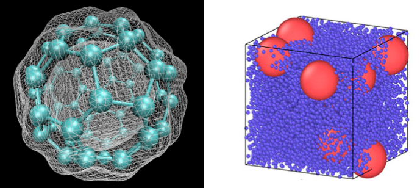
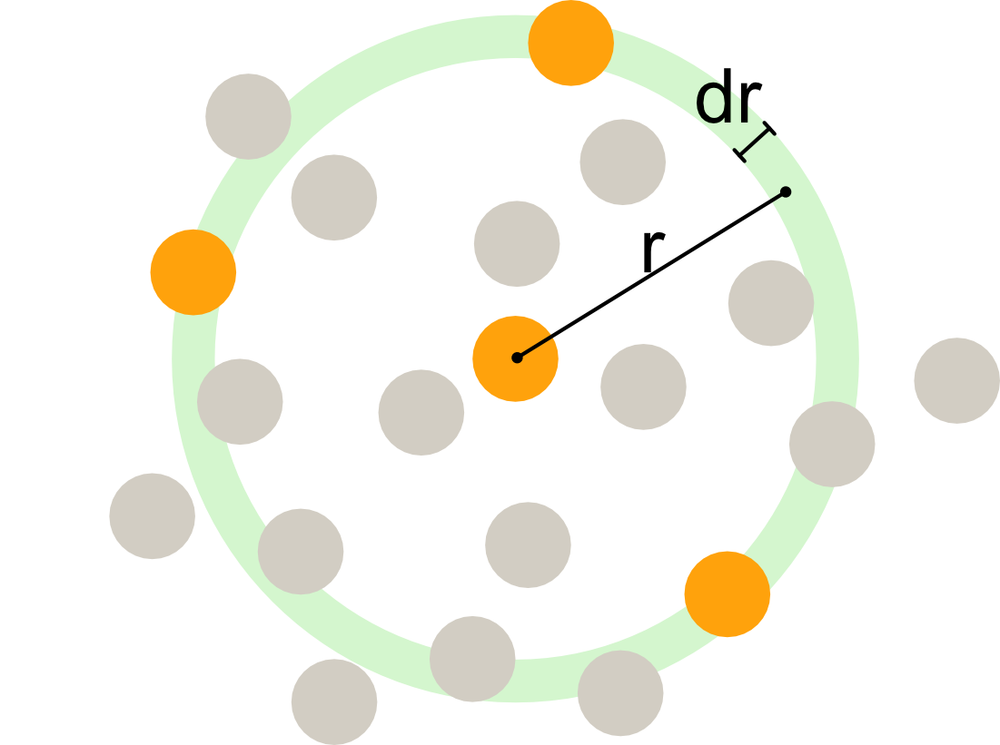
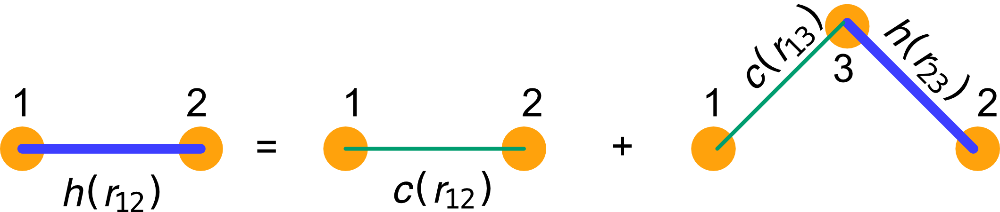
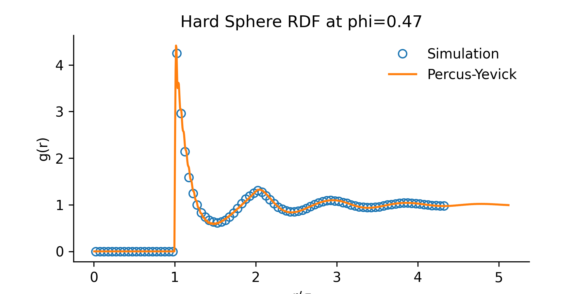

Complex Disordered Systems
Static and dynamic correlations
Today
- Characterisation of colloids
- Static (pair) corrleations
- Diffusive dynamics
Pairwise interactions
True colloidal systems can be complex:
- charges
- shape deformability/swelling
- instabilities of the components
Their theoretical description focuses on essential ingredients.
A simplifying assumption is that the potential energy of a collection of colloids is purely pairwise
U_N\left(\mathbf{r}^N\right)=\sum_{i=1}^{N-1} \sum_{j=i+1}^N V\left(r_i j\right)=\frac{1}{2} \sum_{i \neq j} V\left(r_{i j}\right)
where V(r_{ij}) is the pairwise, radial interaction potential that only depends on the distance between particle centres r_{ij} = \mathbf{r}_i-\mathbf{r}_j.
Aside: Not pairwise?
Some examples of non-pariwise situations:
- Atomistic models: Electronic densities that fluctuate due to quantum effects are intrinsically many-body
- True colloid-cpolymer mixtures: if the polymers are not ideal, their spatial distribution and their forces depend on the positions of more than two colloids

Pairwise interactions and pair correlations
- For pairwise systems, all the thermodynamic properties are solely encoded in the pairwise correlations.
You have already seen such correlations in other contexts (Ising model, lattice gas).
The key pair correlation is the real space radial distribution function:
g(r)=\frac{1}{\rho N}\left\langle\sum_{i=1}^N \sum_{j \neq i} \delta\left(\left|\mathbf{r}_i-\mathbf{r}_j\right|-r\right)\right\rangle
The free energy can then be written as \frac{F_{\mathrm{ex}}}{k_B T}=2 \pi \rho N \int_0^{\infty}[g(r) \ln g(r)-g(r)+1] r^2 d r+\frac{\rho N}{2 k_B T} \int V(r) g(r) d^3 r
and you should be able to read out a part very reminiscent of an (information-theoretical) entropy and one reminiscent of an internal energy.
Radial distribution function
The radial distribution function, algorithmic interpretation: at a distance r, we count the number of particle centres within a slice of width dr and then normalise.
Radial distribution function
The radial distribution function g(r) is related to the average local density at a distance r from a reference particle:
To formally derive this, consider a system of N particles in volume V with average density \rho = N/V. The local density at a distance r from a reference particle is defined as \langle \rho(r) \rangle = \left\langle \sum_{j \neq i} \delta\left(|\mathbf{r}_i - \mathbf{r}_j| - r\right) \right\rangle Averaging over all particles and normalizing by the bulk density \rho gives the radial distribution function: g(r) = \frac{1}{\rho N} \left\langle \sum_{i=1}^N \sum_{j \neq i} \delta\left(|\mathbf{r}_i - \mathbf{r}_j| - r\right) \right\rangle = \frac{\langle \rho(r) \rangle}{\rho}
where \langle \rho(r) \rangle is the average density at distance r from a particle, and \rho is the bulk density.
Radial distribution function
- For an ideal gas, g(r) = 1 everywhere (no correlations).
- For hard spheres, g(r) = 0 for r < \sigma (no overlap), and g(r) shows oscillations at higher r due to packing effects.
Note
Hard spheres in 3D are not exactly solvable! We only have perturbative solutons to hard spheres
- The g(r) is the central object of (equilibrium) liquid state theory
- Correlations between two particles 1 and 2 in a fluid to have two possible origins
- a direct correlation between the two particles, mediated by direct interactions (e.g. collisions) between 1 and 2.
- an indirect correlation, mediated by other particles in the fluid
Direct and indirect correlations
- The g(r) contains both.
- We can assume the existence of a correlation function that instead only incl;udes the direct part and call it c(r). Then a hierarchy exists
h\left(r_{12}\right)=c\left(r_{12}\right)+\rho \int c\left(r_{13}\right) h\left(r_{32}\right) d \mathbf{r}_3
where h(r) = g(r)-1. This is the Ornstein-Zernicke integral equation between particles 1,2 and 3.
Both h(r) and c(r) are unknwon in principle. One needs an additional condition to fix box: these are physical closures leading to approximations.
Meaning of teh Ornstein-Zernicke relation, adapted from Santos, Springer(2016)
Percus-Yevick approximation
A common closure is the Percus-Yevick approximation.
c(r)=[1+h(r)]\left[1-e^{\beta U(r)}\right]
This closure interpolates between the hard-core exclusion (for U(r) \to \infty, c(r) \to 0 inside the core) and the ideal gas limit (for U(r) = 0, c(r) = 0).
The result (semi) analytical. For hard spheres, it allows to calculate the g(r) accurately in a wide range of packing fractions

Equation of states from g(r)
The knowledge of the pair correlations also allows one to extract equation of states and significantly improve on the virial expansion, as the g(r) contains packing effects!
P=\rho k_B T-\frac{2 \pi \rho^2}{3} \int_0^{\infty} r^3 \frac{d u(r)}{d r} g(r) d r
Note
For hard spheres, The derivative \frac{du(r)}{dr} is zero everywhere except at the contact point r = \sigma, where it becomes a delta function: \frac{dV(r)}{dr} = -\infty \delta(r - \sigma)
Substituting into the pressure equation: P = \rho k_B T + \frac{2\pi\rho^2}{3} \sigma^3 g(\sigma)
Therefore, for hard spheres, the equation of state only requires knowledge of the contact value g(\sigma).
We will see this in a problem class.
Structure factor
The real-space correlations and relations have their reciprocal (Fourier space) counterparts.
The structure factor is defined as
S(k)=1+\rho \int[g(r)-1] e^{-i \mathbf{k} \cdot \mathbf{r}} d \mathbf{r}
Isotropicity in 3D simplifies the expression to
S(k)=1+4 \pi \rho \int_0^{\infty} r^2[g(r)-1] \frac{\sin (k r)}{k r} d r
- Radial distribution functions \to easily accessed in confocal experiments (large colloids)
- Structure factors \to immediately accessed via scattering experiments
Structure factor
Interestingly, reciprocal space simplifies integral equations such as Ornstein-Zernicke
\tilde{h}(k)=\frac{\tilde{c}(k)}{1-\rho \tilde{c}(k)}
allowing one to read the direct correlation function directly from scattering data, as \tilde{h}(k)= can be identified with the structure factor.

Aside: higher order correlations
Nothing prevents us to quantify higher order correlations. In general these are non-trivial are controlled by the indirect part of the correlations.
Standard ways to identify n-particle* correlations is to measure structural motifs.

Many body correlations in hard spheres, seminal work from Josh Robinson, PhD student in Bristol a few years ago, Robinson et al PRL (2019)
This is particularly important for dense systems (e.g. glasses, see future lecture).
Dynamics: single vs collective displacements
The thermal motion of individual colloids is often well modeled via the Langevin equation
m \frac{d \vec{v}}{d t}=-\gamma \vec{v}+\vec{\eta}(t)
Coarse-graining over small volumes (and short times) gives us access to the local density \rho(\mathbf{r},t) which obeys a diffusion equation
\frac{\partial \rho(\mathbf{r}, t)}{\partial t}=D \nabla^2 \rho(\mathbf{r}, t)
The diffusivity is linked to the microscopic Langevin parameters via fluctuation-dissipation (Einstein’s relation)
D=\frac{k_B T}{\gamma}
(where the friction is the dissipation and the random force is the fluctuations).
Diffusion equation: macroscopic picture
It is possible to (re)-derive the diffusion equation solely from macroscopic requirements. We have a macroscopic density \rho(r,t) and a macroscpic flux \vec{J}(r,t)
- continuity: there is no mass loss in the dynamics
\frac{\partial \rho(\mathbf{r}, t)}{\partial t}+\nabla \cdot \mathbf{J}(\mathbf{r}, t)=0 where the divergence \nabla \cdot \mathbf{J}(\mathbf{r}, t) represents the net outflow of particles from a given region due to the flux \mathbf{J}.
- Fick’s law : we assume the flow is a gradient field of the density, flowing from high to low density
\mathbf{J}(\mathbf{r}, t)=-D \nabla \rho(\mathbf{r}, t)
It is immediate to combine the two to obtain the diffusion equation
\frac{\partial \rho(\mathbf{r}, t)}{\partial t}=D \nabla^2 \rho(\mathbf{r}, t)
Measuring diffusion coefficients
The distribution \rho(\mathbf{r},t) encodes all the information about the motion of an ensemble.
Often, less is sufficient to characterise the diffusion. The second moment of the displacements (the mean squared displacement) provides this information. In d dimensions \left\langle \left| \mathbf{r}(t) - \mathbf{r}(t_0) \right|^2 \right\rangle = 2 d D t
Hence D can be extracted from linear fits to the MSD.
Stokes-Einstein relation: fluctuation dissipation for colloids
In dilute conditions, let’s think of a particle slowly sedimenting in a viscous fluid.
The density distribution is Boltzmann
n(x)=n_0 \exp \left(-U(x) / k_B T\right)=n_0 \exp \left(-F x / k_B T\right)
where F= m_B g is the force from the buoyant mass.
A flux is produced J_F = n(x) v=\frac{n(x) F}{\xi}
where we used the fact that the velocity is set by the viscosity \eta as v=F/\eta.
Diffusion occurs at the same time, driven by the gradient (Fick’s law) J_D(x)=-D \frac{\partial n(x)}{\partial x}
Stokes-Einstein relation: fluctuation dissipation for colloids
Equating the two we have
\frac{n(x) F}{\xi}=-D \frac{\partial n(x)}{d x}=D \frac{F}{k_B T} n(x)
and differentiating the Boltzmann distribution gives \frac{n(x) F}{\xi}= D \frac{F}{k_B T} n(x)
Hence a balance exists between thermal fluctuations and viscosities. For a sphere, Stoke’s law \xi=6 \pi \eta R yielding simply
D=\frac{k_B T}{\xi}=\frac{k_B T}{6 \pi \eta R}
This is a re-statement of the Einstein relation, called the Stokes-Einstein relation.
\text { Fluctuations: } k_B T \quad \longrightarrow \quad \text { Observed motion: } D \quad \longrightarrow \quad \text { Dissipation: } 6 \pi \eta R .
Which is generic under (moderate) driving.
Random walkers in 2d, example
Hidden assumptions
Note
- We have been considering ensembles of particles microscopically governed by the Langevin equation
- We did not comment on the inter-particle interactions and assumed that the properties of the thermal bath determine the diffusivity D. In reality, interactions between particles can lead to deviations from simple diffusion, especially at higher concentrations, where collective effects and hydrodynamic interactions become important.
Dilute vs dense diffusion
Consider hard spheres in a fluid.
At low volume fractions \phi they rarely collide and they perofrm under/over-damped (Langevin) dynamics. They will therefore diffuse as \operatorname{MSD} (t)= 6D_0 t
Things change when we increase the packing.
- Short times: D_s <D_0, diffusion within cages formed by the neighbours. Mostly free, but with some collisions.
- Long times: D_L\ll D_0 cage breaking. Interactions are both hard core and hydrodynamic

Dilute vs dense diffusion
- At very high volume fractions the cage mechanism becomes more complex: paricles are trapped for long times and only occasionaly break cages:
- cage-jump dynamics \to glassy dynamics (see future lectures)
- rare events \to Levy-flight statistics \neq Gaussian/diffusive statistics
- Breaking of fluctuation-dissipation condition encoded in the Stokes-Einstein relation
- the viscosity increases much faster than the decrease in diffusion D\xi/T\neq \mathrm{constant}